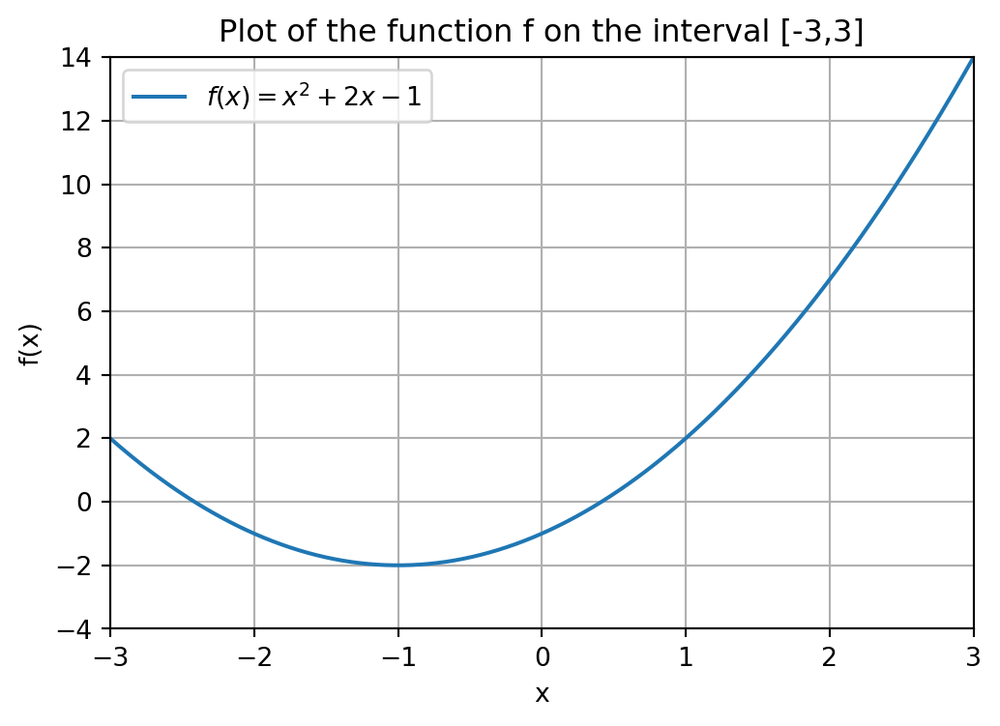
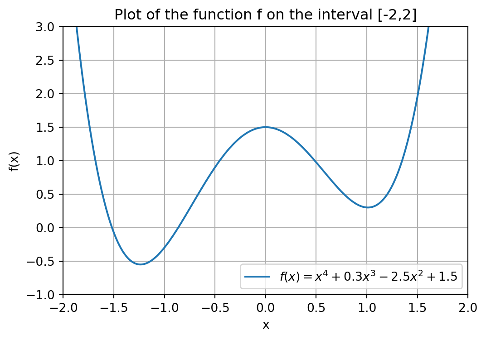
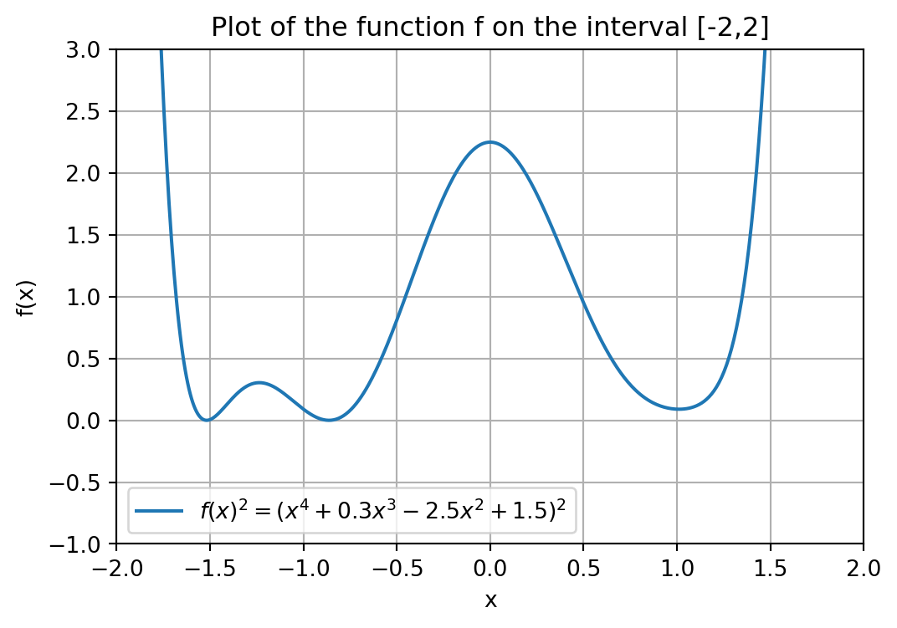

import numpy as np
import scipy.optimize as optimize6 Nonlinear algebra and optimization
In this chapter we will see functions for solving systems of nonlinear equations and how to optimize a nonlinear function.
For equation solving, the main goal is to compute an x \in \mathbb{R}^n that satisfies the system \left\{\begin{array}{c} f_0(x) = 0\\ f_1(x) = 0\\ \vdots \\ f_{n-1}(x) = 0 \end{array}\right. where f_0,\dots,f_{n-1} : \mathbb{R}^n \rightarrow \mathbb{R} are continuous, n-variate functions. That is, we have a systems of n equations and n variables. We will also see the least squares method for problems in which the number of equations is not equal to the number of variables (i.e., the sytem is under- or overdetermined).
For optimizing a function, we have a single continuous, n-variate function f : \mathbb{R}^n \rightarrow \mathbb{R}, and the goal is to compute an x \in \mathbb{R}^n, that attains \min_{x \in \mathbb{R}^n} f(x).
When there is only one (nonlinear) equation in one variable, we will also see ways to specify the interval in which the solution to the respective problems should be searched for.
The Python package SciPy contains all the functions we will need to achieve these goals, in particular, the optimize submodule. We import it under the alias optimize for convenience, and also import NumPy.
6.1 Root finding
In this section we will discuss various root finding methods. We start by introducing various methods for finding the root of a univariate funtion, and then show similar methods for the multivariate case. We end with the least squares method, that finds an approximately optimal solution when a solution might not exist.
6.1.1 Univariate function
We present three type of methods and information that can be used to find roots of a function. We emphasize that none of these methods guarantee that a root will always be found if it exists, but in many cases they do.
Using fsolve()
The easiest-to-use function for finding the root of a univariate function f : \mathbb{R} \rightarrow \mathbb{R} is fsolve() from the optimize module. It takes two mandatory input arguments:
- The function we want to find the root of, and
- an initial guess for the root.
As an example, suppose we want to find the root of the equation f(x) = x^2 + 2\cdot x - 1, that is plotted below. You do not have to look at the code generating this figure (but it is included for completeness).
Show code generating the plot below
import numpy as np
import matplotlib.pyplot as plt
# Define the x range
x = np.linspace(-3, 3, 600)
# Define the function f
def f(x):
return x**2 + 2*x -1
# Create the plot
plt.figure(figsize=(6, 4))
plt.plot(x, f(x), label='$f(x) = x^2 + 2x - 1$')
# Add labels and title
plt.title('Plot of the function f on the interval [-3,3]')
plt.xlabel('x')
plt.ylabel('f(x)')
# Add a grid
plt.grid(True)
# Set range
plt.xlim(-3,3)
plt.ylim(-4,14)
# Add a legend
plt.legend()
# Show the plot
plt.show()
Our initial guess will be guess = 3. There are various ways in which you can input the function and initial guess. Either as
- Keyword arguments: Use
funcfor the function andx0for the initial guess. - Positional arguments: Input function followed by initial guess, without keywords.
def f(x):
return x**2 + 2*x - 1
guess = 3
x_root = optimize.fsolve(f,x0=guess)
# Also works:
# x_root = optimize.fsolve(func=f,x0=guess)
# x_root = optimize.fsolve(x0=guess, func=f)
# x_root = optimize.fsolve(f,guess), here the order matters!
# Does not work
# x_root = optimize.fsolve(x0=guess,f), f is positional, order matters!
# x_root = optimize.fsolve(guess,f), order matters!
print("A root of the function f is given by", x_root)
# x_root is an array one one element;
# can access index 0 to only get value
print("A root of the function f is given by", x_root[0])A root of the function f is given by [0.41421356]
A root of the function f is given by 0.41421356237309503For any function, in SciPy and beyond, you should look at the order of the required arguments of a function in its documentation.
Because different root finding and optimization methods use a different keyword argument for the function of interest (e.g.,
func,fun,f), we will introduce the convention in this chapter that the first input argument of any SciPy function that we use is the function we want to find the root of, or optimize over, and all other input arguments will have a keyword (such asx0). The order of the keyword input arguments is not relevant, as long as they come after the function, which is the first input argument.
The choice of initial guess can determine which root we end up in. The function f has two roots as can be seen from the figure. If we start with another initial guess, such as guess=4, we find the other root of f.
def f(x):
return x**2 + 2*x - 1
guess = -4
x_root = optimize.fsolve(f,x0=guess)
print("Another root of the function f is given by", x_root)Another root of the function f is given by [-2.41421356]If the function f would have had multiple input arguments, than fsolve() interprets the first argument of f as being the unknown variable that it needs to compute. Any remaining arguments of f should be specified in the args keyword argument.
For example, suppose that we would have defined g(x,a,b,c) = a\cdot x^2 + b\cdot x + c. Then executing x_root = optimize.fsolve(g,x0=guess) will result in an error because fsolve() cannot determine a root x if it does not know the values of a,b and c. Therefore, we need to specify these additional inputs in the args keyword argument of fsolve().
def g(x,a,b,c):
return a*x**2 + b*x + c
a, b, c = 1, 2, -1
guess = -4
x_root = optimize.fsolve(g,x0=guess,args=(a,b,c))
print("A root of the function g is given by", x_root)A root of the function g is given by [-2.41421356]We could have also stored the parameters a,b,c in an array so that g would have only had one additional input argument. This is illustrated below.
def g(x,coeff):
return coeff[0]*x**2 + coeff[1]*x + coeff[2]
coeff = np.array([1,2,-1])
guess = -4
x_root = optimize.fsolve(g, x0=guess, args=(coeff))
print("A root of the function g is given by", x_root)A root of the function g is given by [-2.41421356]Bracket information
Another function that can find the root of a univariate function is root_scalar() from the optimize module.
Whereas fsolve() uses one fixed method in the background to find a root, root_scalar() allows the user to choose from a collection of methods. Some methods might perform better than others, depending on the type of function you are trying to find a root of. You can specify which method you want to use with the method keyword argument. Some methods require additional keyword arguments to be specified; see the documentation.
One such additional keyword argument is bracket, that allows you to specify the interval, or bracket, [a,b] in which the root should be searched for. This does, however, come with the requirement that the function values in the points a and b should have a different sign: Either f(a) < 0 < f(b) or f(b) < 0 < f(a). The reason is that this guarantees, by the Intermediate Value Theorem, that there is at least one root in the interval [a,b]. If the bracket does not satisfy this condition, then Python will raise an error (try this yourself).
Let us look at an example where we use the Bisection method, called 'bisect' in SciPy, with interval [0,4]. The order in which you place the keyword argument bracket and method does not matter.
def f(x):
return x**2 + 2*x - 1
interval = [0,4]
result = optimize.root_scalar(f, bracket=interval, method='bisect')
print(result) converged: True
flag: 'converged'
function_calls: 43
iterations: 41
root: 0.41421356237151485Note that Python returns a lot of information regarding the root finding process. For example, it tells us whether the process has converged, meaning it found a point that satisfies f(x) = 0 up to a default precision. You can access these properties with the syntax result.property_name where property_name is the property of interest.
print("The root finding process converged:", result.converged)The root finding process converged: TrueFor us, the most important property is root, which gives the value of the root.
print("A root of the function f is given by", result.root)A root of the function f is given by 0.41421356237151485Derivative information
If a function is differentiable, it is also possible to specify its derivative in some methods. This typically results in much faster root finding methods.
Recall, for example, Newton’s method from Section Section 2.4 that finds a root by iteratively computing better approximations using the formula x_{i+1} = x_i - \frac{f(x_i)}{f'(x_i)} starting from some initial guess x_0. The formula to compute the next iterate relies on
- The derivative f'(x), and
- an initial guess x_0.
Let us look at an example of using Newton’s method. The derivative f' should be defined as a function and can be entered in the fprime keyword argument. The initial guess is inputted in the x0 keyword argument.
For our function f(x) = x^2 + 2x - 1 we have f'(x) = 2(x+1).
def f(x):
return x**2 + 2*x - 1
def f_deriv(x):
return 2*(x+1)
guess = 4
result = optimize.root_scalar(f, method='newton', \
fprime=f_deriv, x0 = guess)
print(result) converged: True
flag: 'converged'
function_calls: 14
iterations: 7
root: 0.41421356237309503Although it is a little bit like comparing apples and pears, the number of function calls and iterations (determining how long a method needs to converge) of Newton’s method is much lower than that of the Bisection method.
Finally, we remark that the args keyword argument to specify additional input parameters can also be used in combination with methods that use bracket or derivative information.
6.1.2 Multivariate functions
Using fsolve()
The fsolve() function can also be used to compute a root of a system of n functions with n unknown variables. It again takes two input arguments:
- The system of function equations to be solved, and
- an initial guess for the (unknown) root.
The system of equations should be modelled as a Python function, i.e., we need a function that takes as input an array x = [x_0,\dots,x_{n-1}] and outputs the array f(x) = [f_{0}(x),\dots,f_{n-1}(x)]. This function will then be the input for fsolve().
As an example for n = 2, suppose we want to solve the system
\left\{\begin{array}{rll} x_0^2 + x_1^2 &=& 4 \\ x_0 + x_1 &=& 1 \\ \end{array}\right..
That is, we have f_0(x_0,x_1) = x_0^2 + x_1^2 -4 and f_1(x_0,x_1) = x_0 + x_1 - 1, and want to solve f_0(x) = 0, f_1(x) = 0. The array [f_0(x),f_1(x)] can be defined as a function in the following way.
def f(x):
# Input : Array x = [x_0, x_1]
# Output : Array f = [f_0(x), f_1(x)]
f = np.array([x[0]**2 + x[1]**2 - 4, x[0] + x[1] - 1])
return fWe emphasize that here the array x = [x_0,x_1] is the input of the function, and not x_0 and x_1 separately. If we would define f as a function of two inputs, i.e., f(x_0,x_1), then fsolve() would want to find a root with respect to its first argument x_0 only, which is not what we want.
Using fsolve() to do the root finding gives us the following solution.
guess = np.array([1,1]) # Our initial guess
root = optimize.fsolve(f, x0=guess)
print(root)[ 1.82287566 -0.82287566]Note that the initial guess is an array in \mathbb{R}^2 this time, as we are considering a function with two variables.
Also here we can use the args keyword argument to specify additional input parameters. Suppose we want to solve, for a = 2 and b = 4, the system
\left\{\begin{array}{rll} a\cdot x_0^2 + x_1^2 &=& 4 \\ x_0 + b\cdot x_1 &=& 1 \\ \end{array}\right..
def f(x,a,b):
return np.array([a*x[0]**2 + x[1]**2 - 4, x[0] + b*x[1] - 1])
guess = np.array([1,1]) # Our initial guess
a, b = 2, 4
x_root = optimize.fsolve(f, x0=guess, args=(a,b))
print(x_root)[ 1.41233385 -0.10308346]You can double-check that the root x^* you found is indeed a root by plugging the solution into the system of equations, i.e., checking if it satisfies f(x^*) = [f_0(x^*), \dots, f_{n-1}(x^*)] = [0,\dots,0].
print(f(x_root,a,b)) # Both coordinates approximately equal to zero[9.59232693e-14 0.00000000e+00]Derivative information
Just as in the univariate case, it is also possible to use other function for finding a root. The analogue of root_scalar() is the function root(). Although it is not possible to input bracket information for this function, it does have methods that use derivate information. These methods are typically faster than fsolve().
Consider again the system
\left\{\begin{array}{rll} x_0^2 + x_1^2 - 4 &=& 0 \\ x_0 + x_1 -1 &=& 0 \\ \end{array}\right..
The “derivative” of the function f : \mathbb{R}^n \rightarrow \mathbb{R}^n given by f(x) = [f_0(x),\dots,f_{n-1}(x)] is the Jacobian matrix
J(f) = \frac{\partial (f_0, \cdots,f_{n-1})}{\partial (x_0,\cdots,x_{n-1})} = \begin{bmatrix} \frac{\partial f_0}{\partial x_0} & \frac{\partial f_0}{\partial x_1} & \cdots & \frac{\partial f_0}{\partial x_n} \\[1ex] \frac{\partial f_1}{\partial x_1} & \frac{\partial f_1}{\partial x_1} & \cdots & \frac{\partial f_1}{\partial x_{n-1}} \\ \vdots & \vdots & \ddots & \vdots \\ \frac{\partial f_{n-1}}{\partial x_0} & \frac{\partial f_{n-1}}{\partial x_1} & \cdots & \frac{\partial f_{n-1}}{\partial x_{n-1}} \end{bmatrix}.
For the two equations at hand, we have
J(f) = \begin{bmatrix} 2x_0 & 2x_1\\ 1 & 1\end{bmatrix}.
Just as in the univariate case when using Newton’s method, we need to input an initial guess and the Jacobian matrix, where the latter should be defined as a function. The Jacobian is inputted in the jac keyword argument; the initial guess in x0.
def f(x):
return np.array([x[0]**2 + x[1]**2 - 4, x[0] + x[1] - 1])
def jac_f(x):
J = np.array([[2*x[0], 2*x[1]],[1,1]])
return J
guess = np.array([1,1]) # Our initial guess
result = optimize.root(f, jac=jac_f,x0=guess)
print(result) message: The solution converged.
success: True
status: 1
fun: [ 0.000e+00 0.000e+00]
x: [ 1.823e+00 -8.229e-01]
nfev: 27
njev: 2
fjac: [[-9.745e-01 -2.243e-01]
[-2.243e-01 9.745e-01]]
r: [-4.458e+00 6.983e-01 1.187e+00]
qtf: [ 1.848e-10 4.255e-11]We can access the properties of the result of the root finding procedure with the syntax result.property_name where property_name is the property of interest. Here the root is given by the property x.
print("A root of the function f is given by", result.x)A root of the function f is given by [ 1.82287566 -0.82287566]Note that this is the same root that we found with fsolve().
6.1.3 Least squares method
If the number of functions is not equal to the number of variables, or if the system does not have a solution, the least squares method optimize.least_squares is your best pick to find a root.
The function (when using the default settings) tries to compute a point x that attains the minimum of the residual function R(f_0,\dots,f_{n-1}) = \min_{x \in \mathbb{R}^n} \sum_{i=1}^{n-1} f_i(x)^2, It should be observed that R(f_0,\dots,f_{n-1}) \geq 0 and R(f_0,\dots,f_{n-1}) = 0 if and only if the system f_0(x) = 0,\dots, f_{n-1}(x)=0 has a root.
The function optimize.least_squares takes just like fsolve() two input arguments: The system of equations and an initial guess.
Let’s look at an example. Consider the system
\left\{
\begin{array}{lllll}
f_0(x)& =& \sin(x) &=& 0 \\
f_1(x)& =& (x - \pi + 0.1)^2 &=& 0 \\
f_2(x)& =& (x - \pi) &=& 0
\end{array}\right..
Without the 0.1-term, this system would have the unique solution x = \pi, but this small perturbation causes it to become infeasible. We can still find an approximately optimal solution with the least squares method. The number \pi can be accessed in NumPy using np.pi.
def system(x):
return np.array([np.sin(x[0]), (x[0]-np.pi + 0.1)**2, x[0] - np.pi])
guess = 1
result = optimize.least_squares(system,x0=guess)
print("Least squares solution found is x = ", result.x) # Close to piLeast squares solution found is x = [3.1406215]Although optimize.least_squares often works well, it does not necessarily compute a root of the function even if one exists. What it actually does, is compute a local minimum of the residual function.
Let us illustrate this with an example. Consider the function f(x) = x^4 + 0.3x^3 - 2.5x^2 + 1.5, which has two (real) roots as can be seen from the figure below.
Show code generating the plot below
import numpy as np
import matplotlib.pyplot as plt
# Define the x range
x = np.linspace(-2, 2, 600)
# Define the function f
def f(x):
return x**4 + 0.3*x**3 - 2.5*x**2 + 1.5
# Create the plot
plt.figure(figsize=(6, 4))
plt.plot(x, f(x), label='$f(x) = x^4 + 0.3x^3 - 2.5x^2 + 1.5$')
# Add labels and title
plt.title('Plot of the function f on the interval [-2,2]')
plt.xlabel('x')
plt.ylabel('f(x)')
# Add a grid
plt.grid(True)
# Set range
plt.xlim(-2,2)
plt.ylim(-1,3)
# Add a legend
plt.legend()
# Show the plot
plt.show()
We execute both Newton’s and the least squares method with the same initial guess.
# Function f
def f(x):
return (x**4 + 0.3*x**3 - 2.5*x**2 + 1.5)
# Derivative of f
def f_deriv(x):
return 4*x**3 + 0.9*x**2 -5*x
guess = 1.5
# Newton's method
result = optimize.root_scalar(f, method='newton', \
fprime=f_deriv, x0 = guess)
print("Root found by Newton's method: \n x =", result.root,
f"with f(x) =", f(result.root))
# Least squares method
result_ls = optimize.least_squares(f, x0=guess)
print("Root found by least squares method: \n x =", result_ls.x,
f"with f(x) =", f(result_ls.x))Root found by Newton's method:
x = -1.5180670079327394 with f(x) = -8.881784197001252e-16
Root found by least squares method:
x = [1.01118148] with f(x) = [0.29943799]As you can see, the least squares method does not find a root, because the function value in the computed point is almost 0.3. What goes wrong here? Consider the residual problem R(f) = \min_x (x^4 + 0.3x^3 - 2.5x^2 + 1.5)^2.
The function g(x) = f(x)^2 = (x^4 + 0.3x^3 - 2.5x^2 + 1.5)^2 is plotted below. As you can see, it has a local minimum around 1. Because we started out with the initial guess 1.5, the least squares method gets stuck in this local minimum.
Show code generating the plot below
import numpy as np
import matplotlib.pyplot as plt
# Define the x range
x = np.linspace(-2, 2, 600)
# Define the function f
def f(x):
return (x**4 + 0.3*x**3 - 2.5*x**2 + 1.5)**2
# Create the plot
plt.figure(figsize=(6, 4))
plt.plot(x, f(x), label='$f(x)^2 = (x^4 + 0.3x^3 - 2.5x^2 + 1.5)^2$')
# Add labels and title
plt.title('Plot of the function f on the interval [-2,2]')
plt.xlabel('x')
plt.ylabel('f(x)')
# Add a grid
plt.grid(True)
# Set range
plt.xlim(-2,2)
plt.ylim(-1,3)
# Add a legend
plt.legend()
# Show the plot
plt.show()
To close this section, we again emphasize that no method is guaranteed to always find a root for every function. For example, fsolve() is also not able to find a root of the function f in this section (try this yourself).
Therefore, always check whether a found solution is actually a root by evaluating the function in the solution found and checking if the resulting value is (almost) zero.
6.2 Nonlinear optimization
In this section we consider the minimization problem \min_{x \in \mathbb{R}^n} f(x). for a function f : \mathbb{R}^n \rightarrow \mathbb{R}. Note that maximization can be done by considering the function -f.
We again start with univariate functions and then switch to multivariate functions later on. In the last section we will also see some examples of constrained optimization, where the domain of f is a subset of \mathbb{R}^n. The syntax for using minimization functions from SciPy will be similar to the syntax we saw for root finding methods.
In particular, also here we can use the args keyword argument to specify any additional input arguments of the function we want to minimize over, so that the optimization can happen with respect to the unknown first input argument of the function.
6.2.1 Univariate function
If f : \mathbb{R} \rightarrow \mathbb{R} is a univariate function then the easiest-to-use functions for minimization are fmin() and minimize_scalar() from the optimize module. We emphasize that these functions find a local minimum of the function f, which might or might not be a global minimum.
The function fmin() works similar as fsolve() in that it requires an initial guess.
def f(x):
return x**4 + 0.3*x**3 - 2.5*x**2 + 1.5
guess=1.5
x_min = optimize.fmin(f,x0=guess)
print("The minimum found is x =", x_min) # Local minimumOptimization terminated successfully.
Current function value: 0.299438
Iterations: 15
Function evaluations: 30
The minimum found is x = [1.01118164]With a different initial guess the method is able to find the global minimum; see the figure in the previous section. Furthermore, you can suppress the output message of fmin() by setting the keyword argument disp=False; see the documentation of fmin().
guess=-1.5
x_min = optimize.fmin(f,x0=guess,disp=False)
print("The minimum found is x =", x_min) # Local minimumThe minimum found is x = [-1.23618164]The function minimize_scalar() gives more flexibility in terms of input arguments. First of all, we can execute it without any additional arguments, but then it more easily gets stuck in a local minimum.
result = optimize.minimize_scalar(f)
print(result)
# We access root with result.x
print("The minimum found is x =", result.x) message:
Optimization terminated successfully;
The returned value satisfies the termination criteria
(using xtol = 1.48e-08 )
success: True
fun: 0.29943799106751934
x: 1.011179780213775
nit: 11
nfev: 14
The minimum found is x = 1.011179780213775We can also set an interval in which we want to find a minimum using the bounds keyword argument. Note that in the example below, the function minimize_scalar() does not get stuck in the local minimum around 1.
interval = [-2,2]
result = optimize.minimize_scalar(f,bounds=interval)
print("The minimum found is x =", result.x) The minimum found is x = -1.2361799028533706For more options and different methods that can be used with the method keyword argument, see the documentation of minimize_scalar.
6.2.2 Multivariate function
For multivariate functions, we can use the minimize() function from optimize, being the analogue of root() for root finding. This function can take into account derivative, or gradient, information with certain methods. The gradient of f is given by
\nabla f(x) = \left[\frac{\partial f}{\partial x_0}, \dots, \frac{\partial f}{\partial x_{n-1}} \right].
We can input the gradient again with the keyword argument jac. The default method that minimize() uses is 'BFGS' and this method can use gradient information. You can choose your own method with the method keyword argument; see the documentation.
# Define the function
def f(x):
return (x[0] - 3)**2 + (x[1] + 4)**2 - 1
# Define the gradient
def grad_f(x):
return np.array([2 * (x[0] - 3), 2 * (x[1] + 4)])
# Initial guess
guess = np.array([0.0, 0.0])
# Minimization with gradient information
result = optimize.minimize(f, x0=guess, jac=grad_f)
# Print the result
print("The minimum found is:", result.x)
print("Function value at minimum:", result.fun)The minimum found is: [ 3. -4.]
Function value at minimum: -1.06.2.3 Constrained optimization
Just as with minimize_scalar() the function minimize() can also include interval information using the bounds keyword argument. The syntax for this argument is a list of tuples that for every variable in x = [x_0,\dots,x_{n-1}] contains the lower and upper bound value for the variable. Recall that this is the same way how variable bounds were specified in the linprog package for solving (integer) linear optimization problems.
That is, if we have the constraints \ell_i \leq x_i \leq u_i for i = 0,\dots,n-1, then the input for bounds is [(l_0, u_0), (l_1, u_1), ..., (l_{n-1},u_{n-1})]. Just as in linprog you can set an upper or lower bound equal to None to model that the lower bound is -\infty, or that the upper bound is +\infty.
# Define the function
def f(x):
return (x[0] - 3)**2 + (x[1] + 4)**2 - 1
# Define the gradient
def grad_f(x):
return np.array([2 * (x[0] - 3), 2 * (x[1] + 4)])
# Initial guess
guess = np.array([0.0, 0.0])
intervals = [(None,2), (-2,None)] # x_0 <= 2, x_1 >= -2
# Minimization with gradient information
result = optimize.minimize(f, x0=guess, bounds=intervals)
# Print the result
print("The minimum found is:", result.x)
print("Function value at minimum:", result.fun)The minimum found is: [ 2. -2.]
Function value at minimum: 4.0Next to specifying variable bounds, minimize() can also take into account more complex constraints that restrict the domain of f, i.e., the search space of minimize(), using the constraints keyword argument.
That is, we can solve the problem
\begin{array}{lll} \min_{x \in \mathbb{R}^n} & f(x) &\\ \text{s.t.} & g_j(x) \geq 0 & \text{ for } j = 1,\dots,q-1\\ & h_k(x) = 0 & \text{ for } k = 0,\dots,r-1 \end{array}.
The syntax for adding constraints is to use a tuple containing dictionaries, where each dictionary models a constraints with keys
'type': Use'ineq'for a \geq-constraint and'eq'for an =- constraint;'fun': Python function that describes g_j or h_k.
There is also the optional keyword argument 'args' that allows you to specify additional parameters that appear in the function g_j or h_k.
As an example, suppose we want to solve the problem
\begin{array}{lll} \min_{x \in \mathbb{R}^n} & x_0^2 + 5x_1^2 &\\ \text{s.t.} & x_0 + x_1 \geq 5 & \\ & x_0 - 2x_1 = 3 & \end{array}
Then we have g_0(x) = x_0 + x_1 - 5 and h_0(x) = x_0 - 2x_1 - 3.
# Define functions of constraints
def g(x):
return x[0] + x[1] - 5
def h(x):
return x[0] - 2*x[1] - 3
# Define tuple containing constraints as dictionaries
cons = ({'type' : 'ineq', 'fun' : g},
{'type' : 'eq', 'fun' : h})Let us now do the optimization using these constraints.
def f(x):
return x[0]**2 + x[1]**2
guess = np.array([0,0]) # minimize() always needs guess
result = optimize.minimize(f, x0=guess, constraints=cons)
print("The minimum found is:", result.x)
print("Function value at minimum:", result.fun)The minimum found is: [4.33333333 0.66666667]
Function value at minimum: 19.2222222222229This allows us, for example, to optimize a nonlinear function subject to linear constraints.
6.2.4 Remarks
Just as in the previous chapter, we remark here that there are various other packages in Python to perform optimization tasks with. For example, there is cvxpy for convex optimization, and you can also couple external solvers with Python, as explained in the last chapter.